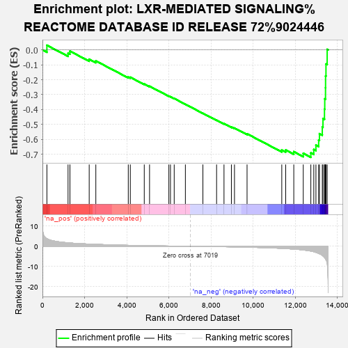

| | | Dataset | rank |
| Phenotype | NoPhenotypeAvailable |
| Upregulated in class | na_neg |
| GeneSet | LXR-MEDIATED SIGNALING%REACTOME DATABASE ID RELEASE 72%9024446 |
| Enrichment Score (ES) | -0.7204237 |
| Normalized Enrichment Score (NES) | -2.004909 |
| Nominal p-value | 0.0 |
| FDR q-value | 0.00620963 |
| FWER p-Value | 0.065 |
Table: GSEA Results Summary

Fig 1: Enrichment plot: LXR-MEDIATED SIGNALING%REACTOME DATABASE ID RELEASE 72%9024446
Profile of the Running ES Score & Positions of GeneSet Members on the Rank Ordered List
| PROBE | GENE SYMBOL | GENE_TITLE | RANK IN GENE LIST | RANK METRIC SCORE | RUNNING ES | CORE ENRICHMENT | | 1 | ABCG1 | | | 211 | 3.804 | 0.0310 | No |
| 2 | NR1H3 | | | 1216 | 1.728 | -0.0220 | No |
| 3 | APOE | | | 1306 | 1.642 | -0.0084 | No |
| 4 | MYLIP | | | 2220 | 1.093 | -0.0625 | No |
| 5 | APOC1 | | | 2535 | 0.953 | -0.0740 | No |
| 6 | KDM3A | | | 4076 | 0.476 | -0.1820 | No |
| 7 | SCD | | | 4173 | 0.454 | -0.1835 | No |
| 8 | AGO3 | | | 4835 | 0.311 | -0.2285 | No |
| 9 | MOV10 | | | 5086 | 0.266 | -0.2438 | No |
| 10 | GPS2 | | | 6003 | 0.125 | -0.3099 | No |
| 11 | RXRB | | | 6080 | 0.114 | -0.3141 | No |
| 12 | PLIN1 | | | 6257 | 0.092 | -0.3260 | No |
| 13 | PCK1 | | | 6788 | 0.027 | -0.3648 | No |
| 14 | HDAC3 | | | 7620 | -0.070 | -0.4254 | No |
| 15 | NR1H2 | | | 8270 | -0.156 | -0.4714 | No |
| 16 | KDM1B | | | 8622 | -0.210 | -0.4948 | No |
| 17 | ABCA1 | | | 8973 | -0.273 | -0.5173 | No |
| 18 | KDM4A | | | 9120 | -0.304 | -0.5244 | No |
| 19 | KDM1A | | | 9717 | -0.439 | -0.5630 | No |
| 20 | AGO1 | | | 11366 | -1.031 | -0.6722 | No |
| 21 | TBL1XR1 | | | 11552 | -1.137 | -0.6719 | No |
| 22 | RXRA | | | 11936 | -1.404 | -0.6830 | No |
| 23 | AGO4 | | | 12386 | -1.817 | -0.6939 | Yes |
| 24 | TBL1X | | | 12746 | -2.385 | -0.6912 | Yes |
| 25 | NCOA1 | | | 12886 | -2.702 | -0.6684 | Yes |
| 26 | TNRC6A | | | 12988 | -3.025 | -0.6387 | Yes |
| 27 | EEPD1 | | | 13117 | -3.528 | -0.6050 | Yes |
| 28 | ARL4C | | | 13155 | -3.715 | -0.5622 | Yes |
| 29 | TNRC6C | | | 13290 | -4.498 | -0.5169 | Yes |
| 30 | NCOR1 | | | 13323 | -4.769 | -0.4609 | Yes |
| 31 | AGO2 | | | 13394 | -5.537 | -0.3982 | Yes |
| 32 | NCOR2 | | | 13407 | -5.756 | -0.3285 | Yes |
| 33 | FASN | | | 13443 | -6.322 | -0.2536 | Yes |
| 34 | TNRC6B | | | 13446 | -6.404 | -0.1753 | Yes |
| 35 | EP300 | | | 13465 | -6.677 | -0.0948 | Yes |
| 36 | NRIP1 | | | 13522 | -8.347 | 0.0034 | Yes |
Table: GSEA details [plain text format]
Fig 2: LXR-MEDIATED SIGNALING%REACTOME DATABASE ID RELEASE 72%9024446: Random ES distribution
Gene set null distribution of ES for LXR-MEDIATED SIGNALING%REACTOME DATABASE ID RELEASE 72%9024446